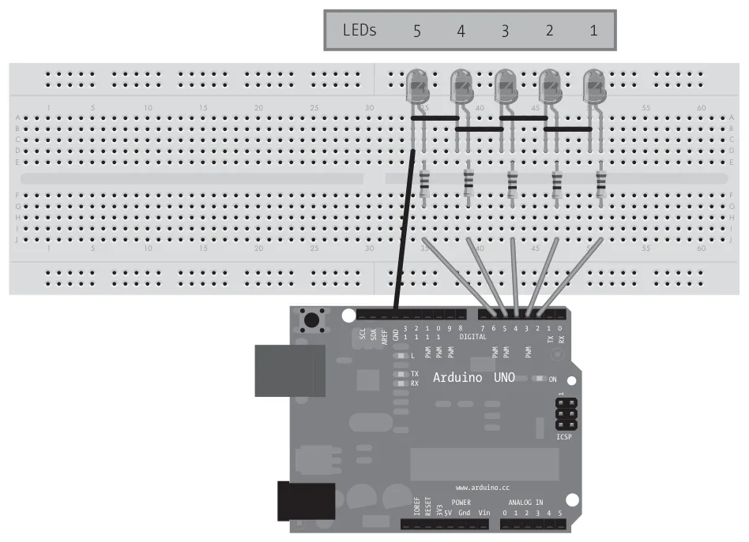

Let’s put some LEDs and resistors to work. In this project, we’ll use five LEDs to emulate the front of the famous TV show vehicle KITT from the television show Knight Rider, creating a kind of wavelike light pattern.
The Algorithm
Here’s our algorithm for this project:
- Turn on LED 1.
- Wait half a second.
- Turn off LED 1.
- Turn on LED 2.
- Wait half a second.
- Turn off LED 2.
- Continue until LED 5 is turned on, at which point the process reverses from LED 5 to 1.
- Repeat indefinitely.
The Hardware
Here’s what you’ll need to create this project:
- Five LEDs
- Five 560 Ω resistors
- One breadboard
- Various connecting wires
- Arduino and USB cable
We will connect the LEDs to digital pins 2 through 6 via the 560-ohm current-limiting resistors.
The Sketch
Now for our sketch. Enter this code into the IDE:
// Project 1 - Creating a Blinking LED Wave
❶ void setup()
{
pinMode(2, OUTPUT); // LED 1 control pin is set up as an output
pinMode(3, OUTPUT); // same for LED 2 to LED 5
pinMode(4, OUTPUT);
pinMode(5, OUTPUT);
pinMode(6, OUTPUT);
}
❷ void loop()
{
digitalWrite(2, HIGH); // Turn LED 1 on
delay(500); // wait half a second
digitalWrite(2, LOW); // Turn LED 1 off
digitalWrite(3, HIGH); // and repeat for LED 2 to 5
delay(500);
digitalWrite(3, LOW);
digitalWrite(4, HIGH);
delay(500);
digitalWrite(4, LOW);
digitalWrite(5, HIGH);
delay(500);
digitalWrite(5, LOW);
digitalWrite(6, HIGH);
delay(500);
digitalWrite(6, LOW);
digitalWrite(5, HIGH);
delay(500);
digitalWrite(5, LOW);
digitalWrite(4, HIGH);
delay(500);
digitalWrite(4, LOW);
digitalWrite(3, HIGH);
delay(500);
digitalWrite(3, LOW);
// the loop() will now loop around and start from the top again
}In void setup() at ❶, the digital I/O pins are set to outputs, because we want them to send current to the LEDs on demand. We specify when to turn on each LED using the digitalWrite() function in the void loop() ❷ section of the sketch.
The Schematic
Now let’s build the circuit. Circuit layout can be described in several ways. For the first few projects in this book, we’ll use physical layout diagrams similar to the one shown in Figure 3-13.
By comparing the wiring diagram to the functions in the sketch, you can begin to make sense of the circuit. For example, when we use digitalWrite(2, HIGH), a high voltage of 5 V flows from digital pin 2, through the current-limiting resistor, through the LED via the anode and then the cathode, and finally back to the Arduino’s GND socket to complete the circuit. Then, when we use digitalWrite(2, LOW), the current stops and the LED turns off.

Running the Sketch
Now connect your Arduino and upload the sketch. After a second or two, the LEDs should blink from left to right and then back again. Success is a wonderful thing—embrace it!
If nothing happens, however, then immediately remove the USB cable from the Arduino and check that you typed the sketch correctly. If you find an error, fix it and upload your sketch again. If your sketch matches exactly and the LEDs still don’t blink, check your wiring on the breadboard.
You now know how to make an LED blink with your Arduino, but this sketch is somewhat inefficient. For example, if you wanted to modify this sketch to make the LEDs cycle more quickly, you would need to alter each delay(500). There is a better way.